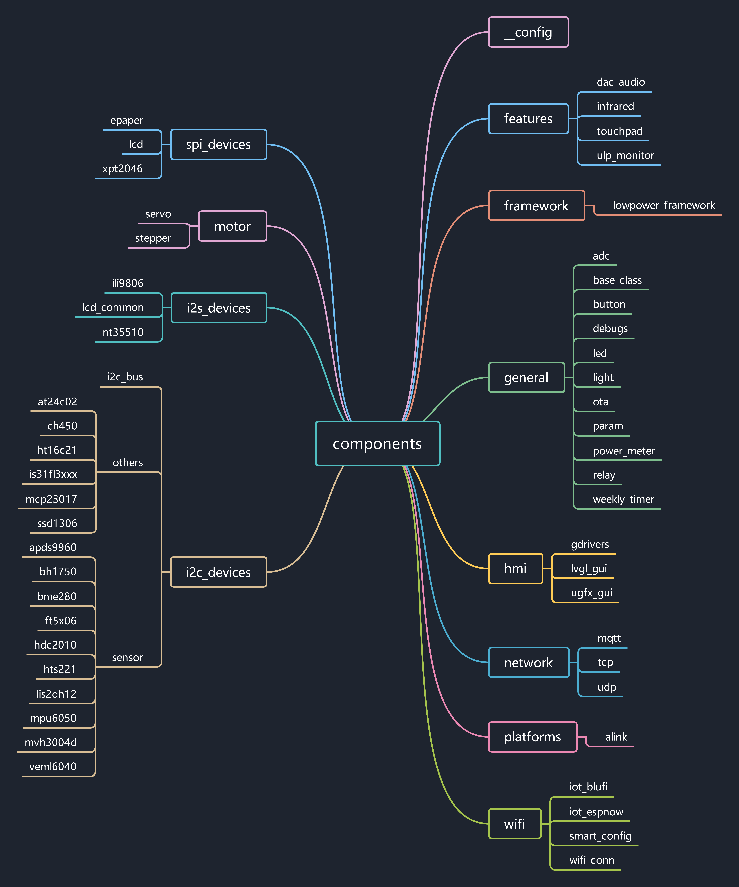
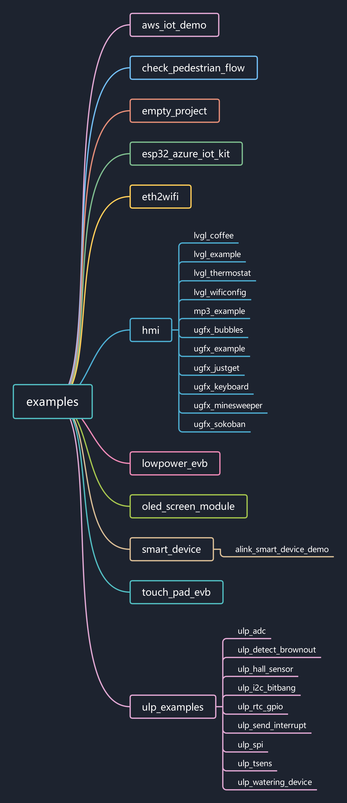

iot-solution-note1
components 统计
一共 57 个
1
2
3
4
5
6
7
8
9
10
11
12
13
14
15
16
17
18
19
20
21
22
23
24
25
26
27
28
29
30
31
32
33
34
35
36
37
38
39
40
41
42
43
44
45
46
47
48
49
50
51
52
53
54
55
56
57
| __config
a4988
adc
alink
apds9960
at24c02
base_class
bh1750
bme280
button
ch450
dac_audio
debugs
deep_sleep
epaper
ft5x06
gdrivers
hdc2010
ht16c21
hts221
i2c_bus
ili9806
infrared
iot_blufi
iot_espnow
is31fl3xxx
lcd
lcd_common
led
light
light_sleep
lis2dh12
lowpower_framework
lvgl_gui
mcp23017
modem_sleep
mpu6050
mqtt
mvh3004d
nt35510
ota
param
power_meter
relay
servo_motor
smart_config
ssd1306
tcp
touchpad
udp
ugfx_gui
ulp_monitor
unity
veml6040
weekly_timer
wifi_conn
xpt2046
|

examples 统计

待讨论问题
- __config 组件需要拆分，将配置放到每个组件内部
- examples 中有些因缺失文件导致编译不过
- 传感器文件结构待优化（是否可以按照作用归类）组件难以复用，存在较多耦合
- 定位 example 需要做哪些 demo，去掉与 idf 以及 其他仓库重合的部分
- hmi 部分独立出去
- 驱动是否按照统一的框架编写
- C++ 部分代码是否保留
应该以 examples 为主导，与examples 紧密相关的 components 都放在 examples 中，通用的才放置在外面，而不是一股脑全放在外面。example 中可以放真正的 solution ，例如低功耗框架，人流监测这样的未在 github 建立仓库的小项目，关于驱动的使用之类，可以在具体 component 中作为 test